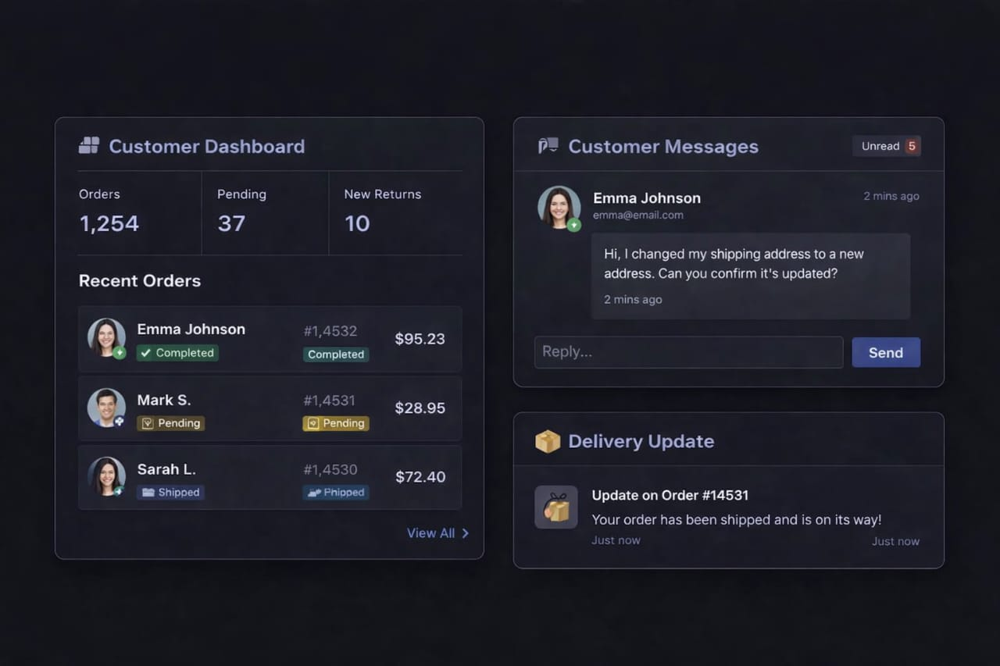

Connect the entire organization
Give product, engineering, design, operations, and leadership a shared view of the work that matters.
- Cross-functional projects
- Centralized workflows
- Organization-wide visibility
Bring product, engineering, operations, and leadership together in one connected workspace built for organizations operating at scale.
Built for organizations that take execution seriously


Nexora gives organizations a shared operating layer for planning, building, reviewing, monitoring, and improving products and workflows.
Give product, engineering, design, operations, and leadership a shared view of the work that matters.
Keep access, permissions, identity, and organizational controls aligned with the way your teams work.
Replace manual coordination with connected workflows, intelligent automation, and AI-powered assistance.
Turn activity across teams and projects into clear insights for the people responsible for execution.
Bring project health, delivery activity, milestones, blockers, and important updates into one shared view. Teams stay focused while leadership gets the context they need.
Talk to our team

Connect actions across your workflow and use intelligent automation to reduce repetitive coordination, surface important information, and keep work moving.
Give every stage of product development a shared place to live while keeping teams aligned around outcomes.
Capture requests, feedback, ideas, and incoming work before they become disconnected tasks.
Align teams around roadmaps, initiatives, priorities, milestones, and strategic objectives.
Coordinate engineering work, AI agents, cycles, development workflows, and delivery.
Keep code changes, reviews, pull requests, and deployment workflows connected.
Understand delivery performance, project health, and organizational progress.
Manage your organization's workspace, users, teams, permissions, integrations, and security policies from a centralized environment.
Connect customer conversations, requests, feedback, and product work so teams can understand what customers need and respond with greater context.
Learn more
Reduce coordination overhead and keep important work moving across teams.
Give teams and leadership the context they need without relying on disconnected reports.
Keep organizational access, workflows, and connected systems under centralized management.
Bring planning, development, collaboration, automation, and monitoring into a unified workspace.
Talk with the Nexora team about your organization's workflows, security requirements, integrations, and deployment needs.